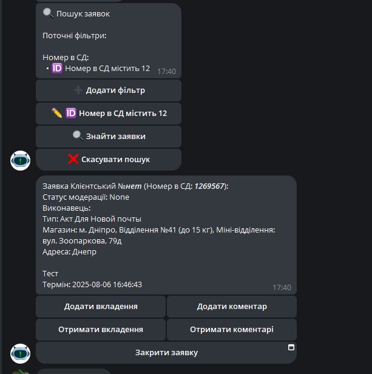
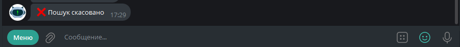

Після натискання на пошук - всі заявки, які доступні користувачеві і відповідають зазначеним фільтрам, виводяться в перегляді Під самою заявкою можуть з'явитися додаткові кнопки для навігації між заявками, якщо їх більше ніж 1
Скасувати пошук
Після натискання - всі фільтри скидаються і пошук скасовується 